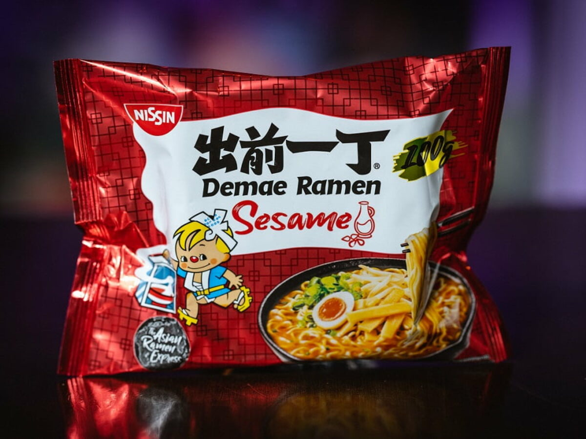

Crispy Ramen

Description
Okay, it might at some point seem that this is a weird meal, but this shit is crazy good. Crispy fried sesame ramen will change your life.
Ingredients
- You could probably use other ramen brands or flavours, but my go-to is Damae Sesame Ramen.
- Sesame Oil (extra)
- A little tin of sweet corn
- An egg, boiled/fried/poached (optional)
Steps
- Add two cm of water to a large frying pan. When it's boiling add your dry ramen.
- Once the ramen is nice and soggy and it has drunk up the water (add a bit more if necessary), add 2-3 tablespoons of sesame oil (the ramen pack contains a sachet of sesame oil but this is not enough), and add the spice packet.
- Mix well and mix regularly at a high tempreature. Add the corn.
- Meanwhile, boil/poach/fry your egg. If you want you could wait until the ramen is done and fry the egg in the empty pan after.
- Once the ramen is golden and crispy it is done!